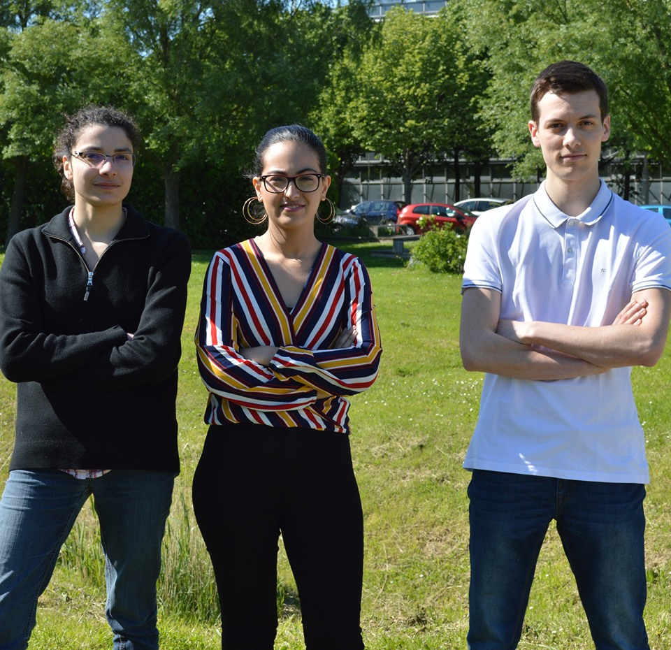

This project has been proposed to IMAC students by Vincent Nozick (researcher and teacher), Steven de Keninck (technical director at “Matrix Factory“) and Hugo Hadfield (PhD Student in Cambridge).


From left to right : Corradi Emilie, Fadili Amina, Lavallée Lucas